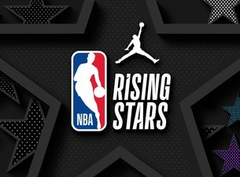
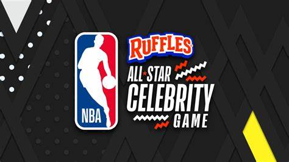
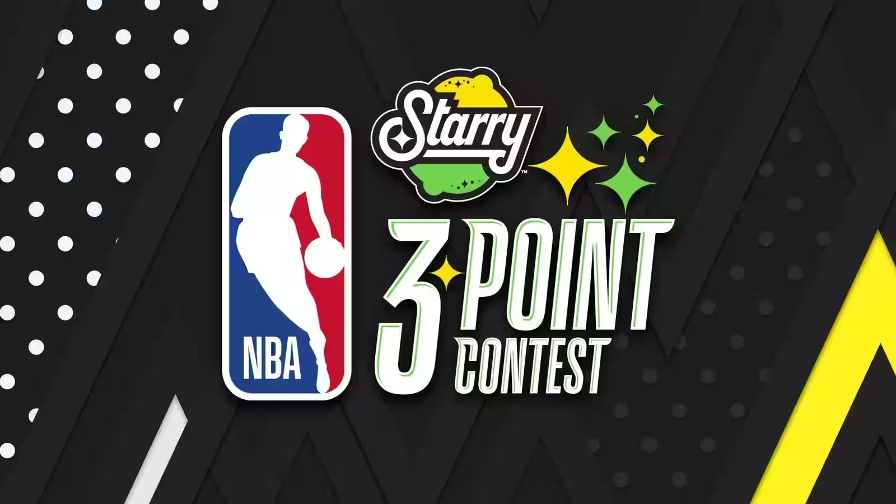
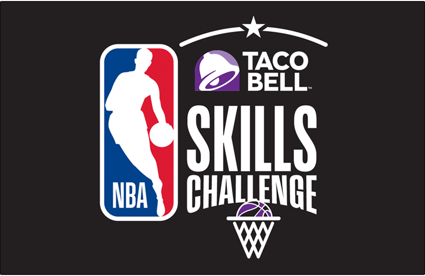
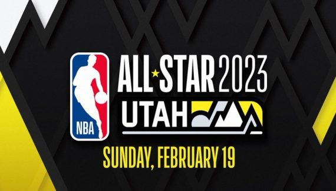

Le vendredi
Rising Stars Challenge

Le Rising Stars Challenge est une compétition de basket-ball ayant lieu durant le NBA All-Star Weekend, la journée précédant le All-Star Game.
De 1994 à 1998, l’événement était appelé le "Rookie Game", et était composé uniquement de joueurs de première année.
De 2000 à 2011, le match opposait une équipe de joueurs effectuant leur première saison en NBA (les Rookies) contre une équipe de joueurs effectuant leur deuxième saison en NBA (les Sophomores).
Le changement de format est largement dû à l'annulation du All-Star Weekend, en 1999 à cause du Lock-out cette saison-là.
Il était sponsorisé par l’opérateur T-Mobile, tandis qu'aujourd'hui, il est sponsorisé par le groupe bancaire espagnol Banco Bilbao Vizcaya Argentaria.
NBA All-Star Week-end Celebrity Game

Le NBA All-Star Celebrity Game est un concours du NBA All-Star Weekend.
Il oppose des anciens joueurs NBA, des anciennes joueuses WNBA, des acteurs, des musiciens, et des athlètes d'autres disciplines sportives.
La première édition a eu lieu en 2004 à Los Angeles, Californie.
Le samedi
Slam Dunk ContestLe Slam Dunk Contest est un concours de dunks organisé par la NBA aux États-Unis durant le NBA All-Star Week-end, le samedi précédant le All-Star Game.
Histoire
Les compétiteurs essayent d’accomplir leurs meilleurs dunks. Lors de ce concours, chaque essai est noté de 6 à 10 par cinq juges (qui le plus souvent sont d'anciens joueurs). Cette évaluation est faite en fonction de l'efficacité, de l'originalité et du côté spectaculaire.Le premier Slam dunk contest a lieu en 1976 en American Basketball Association (ABA), ligue concurrente de la National Basketball Association (NBA) jusqu'en 1976, et dont quatre franchises intègrent la NBA lors de la saison suivante. Ce concours est remporté par Julius Erving, désigné meilleur joueur de l'histoire de cette ligue.
C'est au cours de l'année 1976 que le dunk fut autorisé en NCAA. Le concours disparait à la suite de la fusion entre la NBA et la ABA, mais les dirigeants de la ligue s'aperçoivent de la popularité de cette action de jeu et créent son propre concours dont la première édition eut lieu en 1984. Entre 2008 et 2014, le vainqueur est déterminé par un vote des fans par l'intermédiaire de SMS, ainsi que par Twitter à partir de 2012. Mais à partir de 2015, le jury décide à nouveau seul du vainqueur.
Three-Point Contest

Le Three-point Contest est un concours du National Basketball Association All-Star Weekend qui a lieu le samedi avant le NBA All-Star Game. Six joueurs prennent part aux concours. Les concurrents tentent d'inscrire le plus de points possibles en une minute. Il y a cinq racks de ballons alignés tout autour de l'arc de cercle à 3-points.
Chaque rack compte cinq ballons, quatre d'entre eux comptant pour un point (les ballons orange classiques) et le cinquième (un ballon bleu, blanc, rouge; surnommé le "money ball") vaut deux points. Depuis 2013, le joueur peut choisir un rack composé exclusivement de "money ball", le score parfait est maintenant de 34 points. Lors du premier tour, chaque concurrent a une possibilité d'inscrire autant de points que possible. Les trois joueurs avec le score le plus élevé sont qualifiés pour la finale.
Skills Challenge

Le Skills Challenge eut lieu pour la première fois durant le NBA All-Star Weekend de 2003. C'est une compétition pour les joueurs agiles avec le ballon. Tout d'abord, le concurrent doit effectuer un lay-up ; puis, il doit dribbler entre trois obstacles. Les règles habituelles de dribble doivent être respectées. À la fin des obstacles, le joueur doit faire un lancer qui ne doit pas toucher l'arceau, suivi par un lancer dans un deuxième panier qui ne doit également pas toucher l'arceau. Après ces lancers, le joueur effectue un tir à 6 mètres du panier. Ensuite, le joueur doit faire un long lancer dans un troisième panier. Pour finir, le joueur doit dribbler entre un ensemble de trois obstacles et compléter l'épreuve par un lay-up. C'est après que toutes ces tâches sont effectuées victorieusement que le chronomètre s'arrête. Après un premier tour, les deux joueurs les plus rapides s'affrontent alors en finale.
Depuis 2022, la compétition évolue en un tournoi de 3 épreuves opposant 3 équipes. Elle comprend toujours un parcours avec du dribble, de la passe et du tir à mi-distance et à trois points. La seconde épreuve est un concours de passes et la dernière épreuve est un concours de tirs avec plusieurs spots de tirs amenant plus ou moins de points.
Le dimanche
All-Star Game
Le NBA All-Star Game, ou Match des étoiles de la NBA, est un match annuel de basket-ball opposant historiquement les meilleurs joueurs des Conférences Est et Ouest de la NBA. Autour de cet événement, la NBA a mis en place un véritable week-end de festivités : le NBA All-Star Week-end. Chaque joueur sélectionné au moins une fois au All-Star Game reçoit le qualificatif de All-Star. Le premier All-Star Game de l'histoire a été organisé le 2 mars 1951 au Boston Garden.
Traditionnellement, le cinq majeur des deux conférences est élu à travers les votes des fans partout dans le monde. Internet est devenu le mode principal de vote, mais durant les décennies précédentes le format papier était le plus répandu, les bulletins de vote distribués dans les magasins partenaires de la NBA. Sur ce bulletin, doivent être nommés 5 joueurs par Conférence : 2 ailiers, 2 arrières et 1 pivot, parmi une liste prédéfinie d'environ cent joueurs. Le votant peut choisir un seul joueur non-présent sur le bulletin. Les remplaçants de chaque conférence sont choisis par l'ensemble des entraîneurs de la NBA. Ceux-ci n'ont cependant pas le droit de voter pour un joueur de leur propre équipe. Si un joueur est blessé et ne peut pas participer, c'est le commissaire de la NBA qui désigne le remplaçant.
La particularité de cet évènement est qu'il n'y a aucune des règles habituelles d'un match de basket traditionnel (marché, reprise etc), seulement du divertissement !